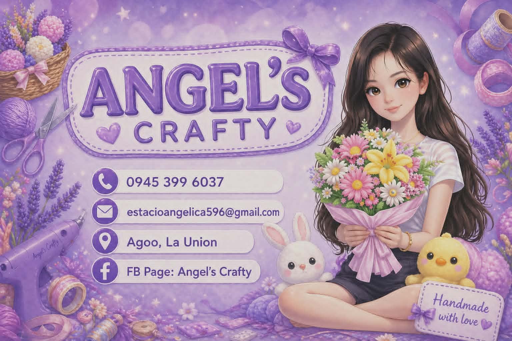
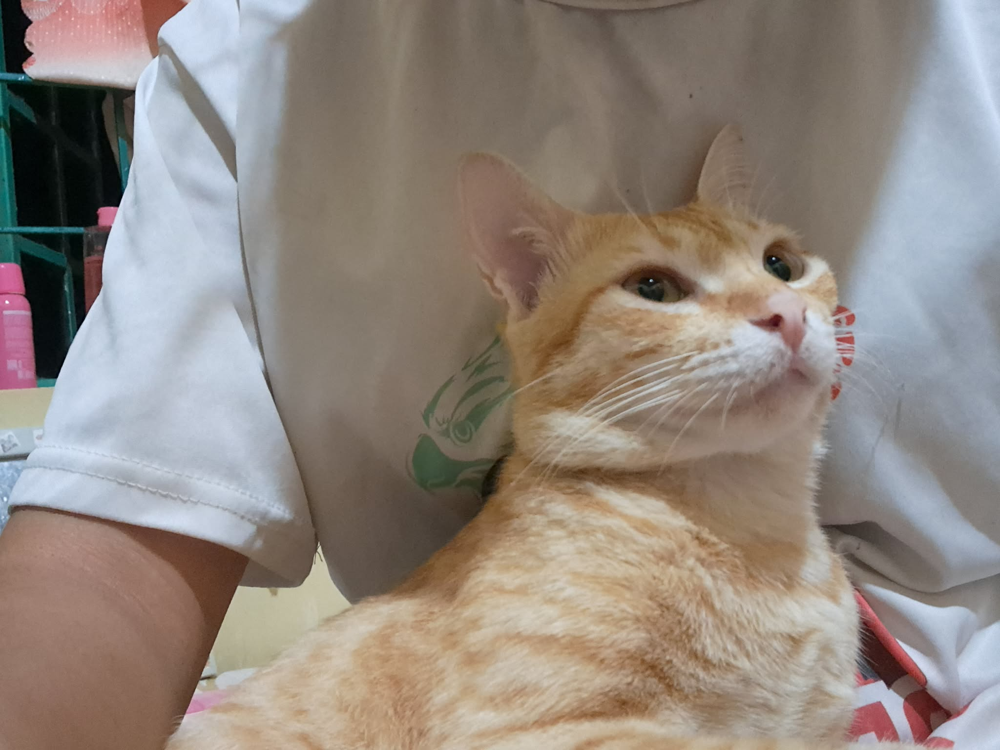

Angelica Ramos Estacio
Bachelor of Computer Science Student
Dreamer • Creator • Business Owner • Future IT Professional
Dreamer • Creator • Business Owner • Future IT Professional
Hello! I am Angelica Ramos Estacio, a Bachelor of Computer Science student from Don Mariano Marcos Memorial State University South La Union Campus.
I was born on September 9, 2005. My family calls me Angel, while my friends call me Angge.
I am passionate about coding, technology, entrepreneurship, and self-development.
During my on-the-job training, I learned how inventory systems work through Microsoft Excel and manual inventory recording.
I enhanced my communication, leadership, adaptability, teamwork, and problem-solving skills while working with employees and fellow trainees.
I also improved my Microsoft Excel, Microsoft Word, and CamScanner skills.

Angel's Crafty is my small business where I create handmade bouquets and fuzzy wire crafts.
This business helped me develop creativity, customer service, marketing, and entrepreneurial skills.

This is my cat, Munchy.
I love cats because they are caring, sweet, lovable, and comforting.
Munchy is my emotional support baby and one of my favorite companions.
Phone: 09453996037
Email: angelestacio767@gmail.com
Facebook: Angelica Estacio
Business Page: Angel's Crafty
Agoo, La Union
I am a proud Seventh-day Adventist. My faith inspires me to become a disciplined, responsible, and compassionate individual.